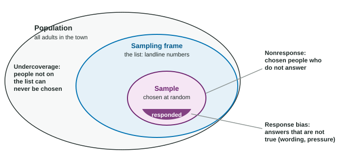

Potential Problems with Sampling
Bias is a systematic error in a sampling method.
Part 1 · Hook
Why this matters
Part 2 · Before you start
What this builds on
Part 3 · Prerequisite check
Quick check before you start
1. What is a sampling frame?
- The list the sample is drawn from
- The sample size
- The survey question
- The population mean
Show the answer
The frame is the list of individuals the sample is chosen from.
- Correct: The list the sample is drawn from:
- The sample size:
- The survey question:
- The population mean:
2. Which uses chance to choose individuals?
- A simple random sample
- Asking friends
- Asking the first 50 shoppers
- Letting people sign up
Show the answer
Only the simple random sample uses a chance process.
- Correct: A simple random sample:
- Asking friends:
- Asking the first 50 shoppers:
- Letting people sign up:
Part 4 · See it
See it first

Part 5 · Step by step
How it works, step by step
- A method that lets people choose themselves, or picks whoever is easy to reachover-represents some kinds of people: voluntary response or convenience sampling
- A frame that misses part of the populationthose people have no chance of being chosen: undercoverage
- Chosen people who do not respond, or who answer untruthfully because of wording or pressurenonresponse and response bias, even in a random sample
- Each of these pushes results the same way every timethe method is biased, and a larger sample does not fix it
Part 6 · Key ideas
Key ideas
- A sampling method is biased if it systematically overestimates or underestimates the value it is trying to estimate.
- Voluntary response samples (people choose to answer) and convenience samples (easy to reach) are not random and are usually biased.
- Undercoverage: part of the population is missing from the frame. Nonresponse: chosen individuals do not respond. Response bias: answers are not true, from leading wording, sensitive questions or pressure.
- Name the bias, explain how the sample differs from the population, and give the likely direction. A larger sample never removes bias.
Part 7 · Misconception
A common mistake
The wrong idea: The online poll got 50,000 votes, so its result must be close to the truth.
What actually happens: A voluntary response sample is biased toward strong opinions. More votes give a more precise answer to the wrong question; only a random sample from the population fixes the method.
Part 8 · Check yourself
Check yourself
Exam-style questions. Anything you miss goes into your review queue.
Table
A survey about a parking fee
A city council wants to know what proportion of the city’s adult residents oppose a new fee for parking downtown. Three plans are proposed:
- Plan 1: post a link on the city website inviting residents to answer one question.
- Plan 2: interview shoppers on the main downtown street on a weekday afternoon.
- Plan 3: mail a survey to 500 adults chosen at random from the list of registered voters. Only 210 mail it back.
1. What kind of sample does plan 1 produce?
- A convenience sample
- A voluntary response sample
- A simple random sample
- A cluster sample of website visitors
Show the answer
When people choose whether to take part, the sample is a voluntary response sample.
- A convenience sample: In a convenience sample the researcher picks people who are easy to reach; here people pick themselves.
- Correct: A voluntary response sample: Right: people decide for themselves whether to answer.
- A simple random sample: No chance process chooses anyone.
- A cluster sample of website visitors: No clusters are chosen at random; anyone who wants to can answer.
2. How is plan 1 likely to be biased?
- It likely underestimates the proportion who oppose the fee
- It has no bias, since each resident can reach the website
- It gives the exact proportion, because many people respond
- It likely overestimates the proportion who oppose the fee
Show the answer
Voluntary response samples overrepresent people with strong opinions, here most likely opponents of the fee, so the estimate is too high.
- It likely underestimates the proportion who oppose the fee: People with strong objections tend to respond most, which pushes the estimate up, not down.
- It has no bias, since each resident can reach the website: Being able to answer is not the same as being chosen by chance; who answers is self-selected.
- It gives the exact proportion, because many people respond: Many responses from a self-selected group are still biased.
- Correct: It likely overestimates the proportion who oppose the fee: Right: residents who feel strongly, often those angry about a new fee, are the most likely to bother answering.
3. Which problem does plan 2 have?
- A convenience sample of people downtown
- It is a voluntary response sample of downtown shoppers
- It has undercoverage of shoppers who drive downtown
- Response bias by mail
Show the answer
Choosing whoever is easy to reach gives a convenience sample. Downtown shoppers, many of whom drive and park there, may differ from other residents.
- Correct: A convenience sample of people downtown: Right: shoppers on one street on a weekday afternoon are easy to reach but may differ from residents as a whole.
- It is a voluntary response sample of downtown shoppers: The interviewers choose whom to approach; people do not sign themselves up.
- It has undercoverage of shoppers who drive downtown: Downtown drivers are likely overrepresented, not left out.
- Response bias by mail: Plan 2 uses interviews, not mail.
4. Only 210 of the 500 adults in plan 3 mailed the survey back. What is this problem called?
- Undercoverage
- Voluntary response
- Nonresponse
- Response bias
Show the answer
Nonresponse occurs when individuals chosen for the sample cannot be reached or do not respond.
- Undercoverage: Undercoverage is about people left out of the frame; these 500 were chosen, then 290 did not reply.
- Voluntary response: The sample was chosen at random; the problem is that many chosen people did not answer.
- Correct: Nonresponse: Right: people chosen for the sample did not respond, and they may differ from those who did.
- Response bias: Response bias is about answers that are not truthful; here there are no answers from 290 people.
5. Plan 3 draws its sample from the list of registered voters. Which problem does that frame create?
- Nonresponse: registered voters are less likely to answer mailed surveys
- Voluntary response: registered voters choose to be on the list
- Undercoverage of residents who are not registered
- No problem
Show the answer
When the sampling frame misses part of the population, those individuals have no chance of being chosen: undercoverage.
- Nonresponse: registered voters are less likely to answer mailed surveys: Nonresponse is a separate problem in plan 3; the frame itself causes undercoverage.
- Voluntary response: registered voters choose to be on the list: People register to vote, not to be in a survey; the issue is who the list leaves out.
- Correct: Undercoverage of residents who are not registered: Right: the frame leaves part of the population out, and those residents may feel differently about the fee.
- No problem: People who register are not chosen by chance and may differ from those who do not.
6. What does it mean for a sampling method to be biased?
- Its results vary a little from one sample to the next
- The researcher has opinions
- It errs in the same direction again and again
- It uses a sample that is smaller than the population
Show the answer
A biased method systematically favors some outcomes, so its estimates are off in the same direction again and again.
- Its results vary a little from one sample to the next: Chance variation from sample to sample is expected even in a good method; bias is a consistent push one way.
- The researcher has opinions: Bias in statistics is about the method, not the researcher’s feelings.
- Correct: It errs in the same direction again and again: Right: bias is a systematic error that repeats sample after sample.
- It uses a sample that is smaller than the population: Every sample is smaller than its population; that alone is not bias.
7. A student explains why a convenience sample is a problem: "The sample is too small." Which explanation would earn credit instead?
- The researcher may have made arithmetic errors in the results
- A convenience sample takes too long to collect
- The sample is too small to calculate a percent
- Easy-to-reach people may differ from the population
Show the answer
Explain bias by the method: a nonrandom sample may differ systematically from the population. Name how it differs and the likely direction.
- The researcher may have made arithmetic errors in the results: That would be a calculation error, not a problem with the sample.
- A convenience sample takes too long to collect: Convenience samples are fast; that is their appeal.
- The sample is too small to calculate a percent: Any sample can give a percent; size is not what makes it biased.
- Correct: Easy-to-reach people may differ from the population: Right: the issue is that the method is not random, not the sample size.
Part 9 · Summary
Summary
Part 10 · Up next
What comes next
Part 11 · Connections